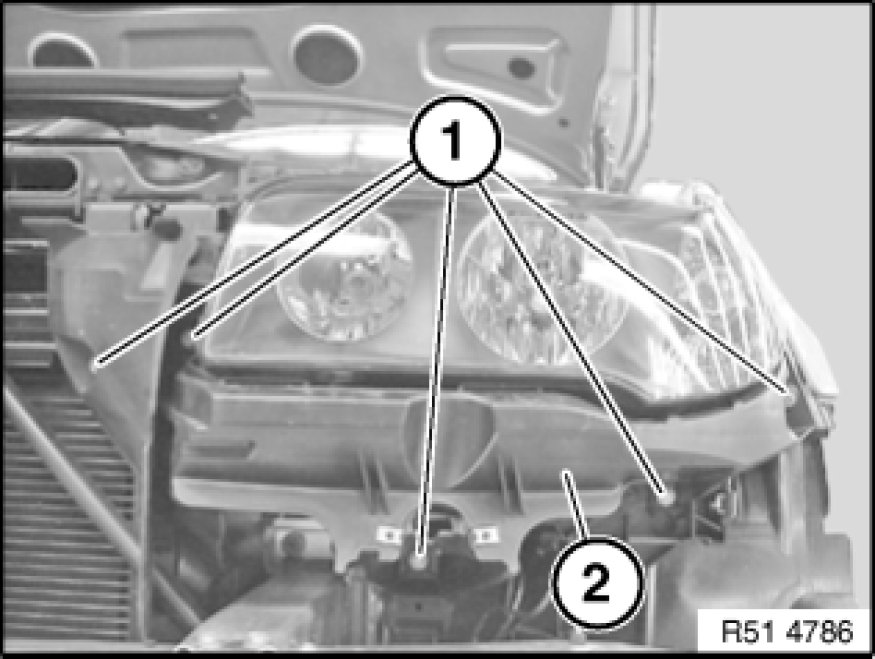

51 11 710 - Removing and installing/replacing left or right headlight bracket (M Technic aerodynamic kit)
51 11 710 - Removing and installing/replacing left or right headlight bracket (M Technic aerodynamic kit)

Necessary preliminary tasks:
- Remove front bumper trim 51 11 156 - Removing and installing/replacing front bumper trim (M Technic aerodynamic kit)
Version with headlight washer system:
- Remove high-pressure nozzle Removing and Installing/Replacing Spray Nozzles of Headlight Washer System on Left or Right (From 09/06)

Release screws (1) and remove bracket (2).